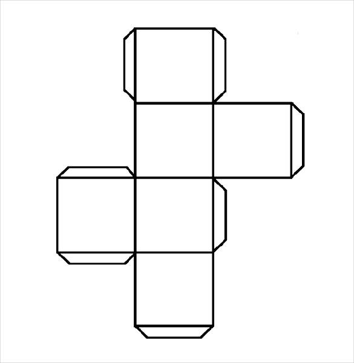

In geometry, a cube is a three-dimensional solid object bounded by six square faces, facets or sides, with three meeting at each vertex. The cube is the only regular hexahedron and is one of the five Platonic solids. It has 6 faces, 12 edges, and 8 vertices. The cube is also a square parallelepiped, an equilateral cuboid and a right rhombohedron. It is a regular square prism in three orientations, and a trigonal trapezohedron in four orientations. The cube is dual to the octahedron. It has cubical or octahedral symmetry. The cube is the only convex polyhedron whose faces are all squares.
Atsauce